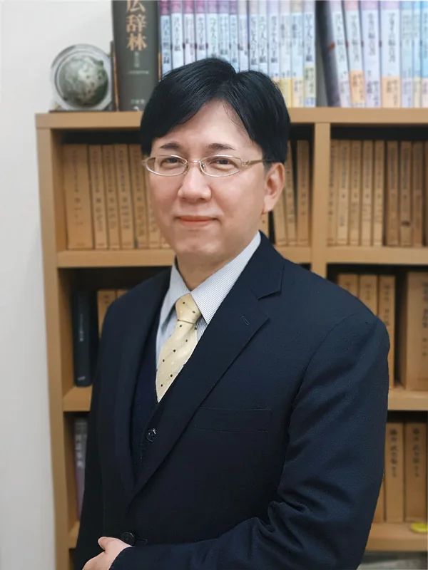

主任牧師（Senior Pastor）
【※挨拶文は現在準備中です。後日正式な原稿に差し替えられます。】
竹田 殉聖Takeda Junsei
福岡新生キリスト教会のホームページへようこそお越しくださいました。
私たちは聖書を神のことばとして信じる、伝統あるプロテスタント教会です。日々の歩みの中で安らぎや希望を求めておられる方、聖書について知りたい方、どなたでも心よりお待ちしております。
イエス・キリストの恵みと平安が、皆様の人生に豊かにありますようにお祈り申し上げます。